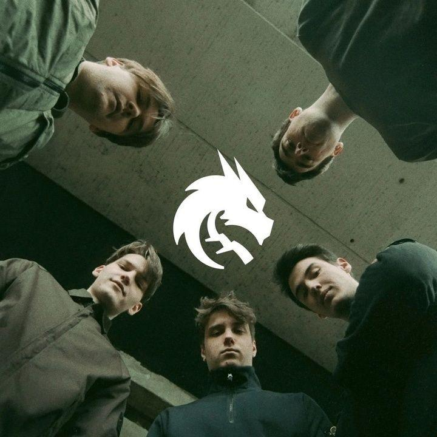

Team Spirit
Team Spirit это Российская международная киберспортивная организация, базирующаяся в Белграде. Основана в 2015 году, в настоящее время имеет команды, соревнующиеся в Counter-Strike 2, Dota 2, Hearthstone and Mobile Legends: Bang Bang. В 2022 году из-за политической ситуации организация переехала из Москва в Белград, Сербия.

Новая эра
В декабре 2016 года начался новый период в истории тега. Была подписана пятёрка из известных игроков СНГ-региона. Команда выступала с переменным успехом, но на крупных турнирах лучшим успехом было 7-9 место на ESL One Birmingham 2018. В сентябре 2018 года коллектив провел ряд замен и ростер стал преимущественно европейским. В 2021 году команда выиграла The International 10.